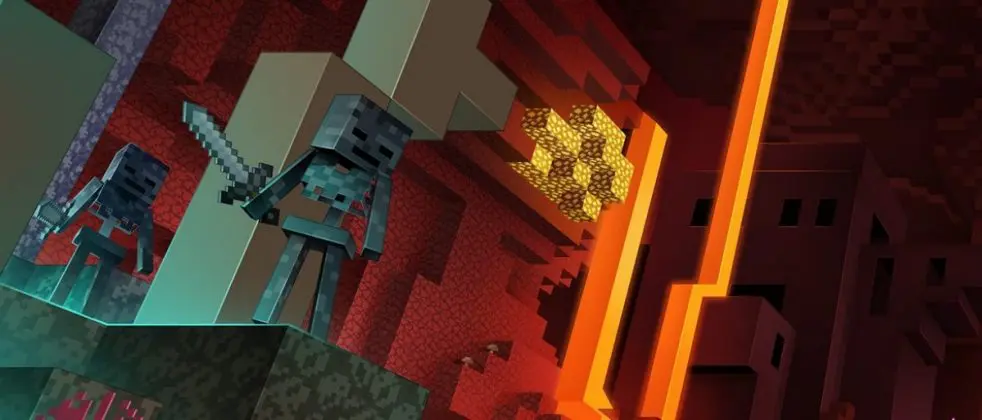

Minecraft's Update 1.16, known as the "Nether Update," was released on June 23, 2020, and provided a massive
update to the Nether dimension, adding more new content and features to this unique dimension. The update introduced four
new biomes: the Crimson Forest, Warped Forest, Soul Sand Valley, and Basalt Deltas, each with unique terrain and
characteristics. These biomes made the Nether a much more interesting place to navigate. Additionally, new blocks
like blackstone, netherite, and ancient debris were introduced, providing players with fresh building materials
and the strongest equipment in the game; also giving incentive to explore this dimension.
Click and Drag to see more....

The Nether Update also added new mobs, including piglins, hoglins, striders, and zoglins. Piglins, with their
trading system, offered a new method for players to obtain valuable resources by trading gold. Hoglins, on the
other hand, provided a food source within the Nether. Striders allowed players to traverse lava lakes safely,
adding a travel system within the Nether with the large lava lakes the Nether had.